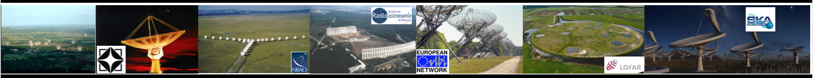

| Publication list Refereed Journals:
103 B. M. Hare, O. Scholten, .;..M. Pandey-Pommier.. et al. 'Needle-like structures observed on positive lightning leader branches as revealed by high-precision 3D VHF Imaging' , Nature, 2019, accepted 102- Arias, M.; Vink, J.;..M. Pandey-Pommier.. et al. 'Low-frequency radio absorption in Cassiopeia A', A&A, 2018, 612 101- Chyży, K. T.; Jurusik, W.;..M. Pandey-Pommier.. et al. `LOFAR MSSS: Flattening low-frequency radio continuum spectra of nearby galaxies', A&A, 2018, 619 100- Kokotanekov, G. Wise, M.; ..M. Pandey-Pommier.. et al. `LOFAR MSSS: The scaling relation between AGN cavity power and radio luminoisty at low radio frequencies', A&A, 2017 99-A.O. Clarke, G. Heald, ….M. Pandey-Pommier… et al. `Discovery of a 2.56 Mpc Giant Radio Galaxy associated with a disturbed galaxy group’, A&A 2016 98- D. Morosan; P. T. Gallagher; …M. Pandey-Pommier… et al.; "Type III-like radio burst associated with a solar jet" ; A&A, 2016 97- Jackson, N., Tagore, A. ….M. Pandey-Pommier… et al. , `LOBOS: the LOFAR LOng-Baseline calibrator Survey’, A&A, 2016 96- Biju, K, …, Pandey-Pommier, M.…. et al., ʻGMRT observations of radio source 4C 35.06: precessing jets and AGN feedback from a cD galaxy under assembly ?, A&A, 2016 95- R. Kale,……M. Pandey-Pommier, et al. ‘Cluster of galaxies and the comsic web with SKA’, JoAA 2016 94- P. Kharb,……M. Pandey-Pommier et al. ‘From nearby low luminosity AGN to high redshift radio galaxies: science interests with SKA’ JoAA 2016 93- G. C. Vocks, F. Breitling, A. Warmuth,… Pandey-Pommier, M., et al. ‘Interferometric images of a solar type I radio burst with LOFAR’, A&A, 2015 92- J. N. Girard, P. Zarka, C. Tasse, … Pandey-Pommier, M., et al. ‘Imaging Jupiter’s radiation belts down to 127 MHz with LOFAR’, A&A, 2015 91- G. Mann, C, Vocks,… Pandey-Pommier, M., et al. ‘Interferometric images of a solar type I radio burst with LOFAR’, A&A, 2016, 90- Buitink, S. .......M. Pandey-Pommier .....et al. ʻRadio detections of cosmic rays reveal strong proton-like component at 10e17 - 10e18 eV' ; Nature 2015 89- M. Bisi, S. Hardwick, .....M. Pandey-Pommier...et al. ʻThe first coronal mass ejection observed with the LOFAR'; ApJ, 2015 ; 88- A. Nelles, J. R. Hörandel, T. Karskensa…… Pandey-Pommier, M., et al. ‘Calibrating the absolute amplitude scale for air showers measured at LOFAR’, JNST, 2015 87- E. Orru, S. van Velzen, R. F. Pizzo, .. Pandey-Pommier, M., et al. ‘Wide-field LOFAR imaging of the field around the double-double radio galaxy B1834+620: A fresh view on a restarted AGN and “doublejets", A&A 2015 86- Aleksandar Shulevski, Raffaella Morganti, , ..... Pandey-Pommier, M., et al.ʼ The peculiar radio galaxy 4C 35.06: a case for recurrent AGN activity? , 2015, A&A, 85- M. Pilia, J.W.T. Hessels, , ..... Pandey-Pommier, M., et al.ʼ Wide-Band, Low- Frequency Pulse Profiles of 100 Radio Pulsars with LOFAR', 2015, A&A, 84- G. Mann, F. Breitling..... Pandey-Pommier, M., et al.ʼ Tracking of an electron beam through the solar corona with LOFAR', 2015 , MNRA 83- Ogrean, G, van Weeren, R., … Pandey-Pommier, M., et al. ‘Frontier Fields Clusters: Chandra and JVLA View of the Pre-Merging Cluster MACS J0416.1-2403’, A&A, 2015, accepted 82- Heald, G., Pizzo, R., ...Pandey-Pommier, M.,.....et al. ʻThe LOFAR Multifrequency Snapshot Sky Survey(MSSS), accepted A&A, 2015 81- A. J. Stewart, R. P. Fender, J. W. Broderick,…… Pandey-Pommier, M., et al. ‘LOFAR MSSS: Detection of a low-frequency radio transient in 400 hrs of monitoring of the North Celestial Pole’, submitted MNRAS, 2015 80- Nelles, A., Schellart, P., ... M. Pandey-Pommier ...ʼ Measuring a Cherenkov ring in the radio emission from air showers at 110-230 MHz with LOFAR' et al. 2015, APh, 65, 11 79- P. Schellart, T . N. G. Trinh, ..... Pandey-Pommier, M., et al. ʻProbing atmospheric electric fields in thunderstorms through radio emission from cosmic-ray induced air showersʼ 2015, PhRvL, 114, 5001 78- J. Moldón, A. T. Deller, ..... Pandey-Pommier, M., et al.ʼ The LOFAR long baseline snapshot calibrator survey', 2015, A&A, 574, 73 77- C. Sobey, N. Young, ... Pandey-Pommier, M., et al. ʻDiscovery of a quiet emission mode in PSR B0823+26', 2015, MNRAS, 451, 2493 76- H. K. Vedantham, Koopmans, L. ... Pandey-Pommier, M., et al. ʻLunar occultation of the diffuse radio sky: LOFAR measurements between 35 and 80 MHz', 2015, MNRAS, 450, 2291 75- Coenen, T., Joeri van Leeuwen, ....Pandey-Pommier, M., et al. ʻThe LOFAR Pilot Surveys for Pulsars and Fast Radio Transients', 2014, A&A, 570, 60 74- Garsden, H., Girard, J., ....Pandey-Pommier, M., et al., LOFAR Sparse Image Reconstruction, 2015, A&A, 575, 90 73- A. Corstanje, P. Schellart, A.,...M. Pandey-Pommier..et al. ; ʻThe shape of the radio wavefront of extensive air showers as measured with- LOFAR ; Elsevier ; 2015 , Astroparticle Physics, Volume 61, p. 22 72- Morosan, D. ; Gallagher, P......M. Pandey-Pommier.....et al.. ; ʻLOFAR Tied-array Imaging of Type lll Radio Burts ; A&A ; 2014 ; 568, 67 71- Jelica, V ; de Bruyn, G. ;.....M. Pandey-Pommier.....et al....ʻInitial LOFAR observations of Epoch of Reionization windows: II. Diffuse polarized emission in the ELAIS- N1 fieldʼ ; A&A ; 2014, 568, 101 70- R.J. van Weeren, W. Williams, Tasse, C. ....H. J..... M. Pandey-Pommier ...; et al., ʼLOFAR low band antenna observations of the 3C295 and BOOTES Fields : Source counts and Ultra-Steep Spectrum source; A&A ; 2014; ApJ, 793, 82 69- J. B. R. Oonk ; R. J. van Weeren ; ....M. Pandey-Pommier...et. al. ʻDiscovery of Radio Recombination Lines towards Cygnus A'; MNRAS ; 437, 3506, 2014 68- P. Schellart, A. Nelles, ... M. Pandey-Pommier....et al. ʻDetecting Cosmic Rays with the LOFAR Radio Telescope'; A&A ; 560A, 98, 2013 67- Lacobelli, M. ; Haverkon, M. ; ....M. Pandey-Pommier...et al. ʻStudying Galactic Interstellar turbulence through fluctuations in synchrotron emission- First LOFAR Galactic foreground detection'; A&A ; 558A, 72, 2013 66- M. Pandey-Pommier, J. Richard, K. Dwarakanath, F. Combes, B. Guiderdoni, et al. ʻLow Frequency Observations in MACSJ07175.7+3745'; A&A ; 2013 65- A. R. Offringa, A. G. de Bruyn, S. Zaroubi.....M. Pandey-Pommier..et. al. ;ʻThe brightness and spatial distributions of terrestrial radio sources'; MNRAS ; 435, 584O, 2013 64- S. Yatawatta, Bruyn, A.......M. Pandey-Pommier...et al., ʻInitial deep LOFAR observations of epoch of reionization windows :1. the North Celestial Pole'; 550A ; 13Y A&A ; 2013 63- T.Hassall, Strappers, B.,....M. Pandey-Pommier...et al., ʻDifferential Frequency- dependent delay from the Pulsar Magnetosphere'; A&A; 552A; 201317 62- C. Sotomayor-Beltran,.......M. Pandey-Pommier..et al., "Calibration of High-Precision Faraday Rotation Measurements from LOFAR" ; A&A, 552A, 58S 2013 61- Van Haarlem, M. ; Wise, M. ; Gunst, A. ...M. Pandey-Pommier ; et al. ; ʻLOFAR : The Low Frequency Array'; A&A; 2013; 556A, 2V 60- A. Asgekar ;.....M. Pandey Pommier ; et al. "LOFAR detections of low-frequency radio recombination lines towards Cassiopeia A", by A. Asgekar et al. 551L ; 11A; MNRAS; 2013 59- W. Hermsen, J. W. T. Hessels. ...M. Pandey-Pommier ; et al. ; ʻSynchronous X-ray and Radio Mode Changing in a Pulsar ; Evidence for a Rapid Global Transformation of the Magnetosphere'; Science; 2013; 339,436-439 58- Offringa, A. ; de Bruyn, G ; Zaroubi, S. ; ....M. Pandey-Pommier ; et al. ; ʻThe LOFAR radio environment'; A&A ; 2013 ; 549A,110 57- Gasperin, F. ; Orru, E. ; Murgia, M. ; .....M. Pandey-Pommier ; et al.; ʻM87 at meter wavelengths : the LOFAR picture'; A&A ; 2012 ; 547A ; 56D 56- R.J. van Weeren, H. J. A. Rottgering, D. A. Rafferty.... M. Pandey-Pommier ; et al., LOFAR Abell 2256 observations at low frequencies' ; A&A ; 543A ; 43V ; 2012 55- T. E. Hassall, Strappers, B.,. M. Pandey-Pommier ; ʻWide-band simultaneous observations of Pulsars'; A&A ; 543A, 66H ; 2012 54- K. Singh, ….… M. Pandey-Pommier + International LOFAR collaboration, et al.; "Optimised Trigger for Ultra High Energy Cosmic Ray and Neutrino observations with the "LOFAR"; NIMPA; 664; 171; 2012 53- B. Strapper; Hessels, J.; Alexov, A;....M. Pandey-Pommier; et al.; ʻObserving pulsars and fast transients with LOFAR', A&A, 530A; 80; 2011 52- M. Murgia, D. Eckert, F. Govoni, C. Ferrari, M. Pandey-Pommier et al. GMRT observations of the Ophiuchus galaxy of clusters, 2010, A&A, 514, 76 51- J. Skilton, M. Pandey-Pommier and H.E.S.S collaboration ʻRadio monitoring of an unidentified high energy source, 2009, MNRAS, 399, 317 50- Pandey, M. D., Rao, A. P. , IshwaraChandra, Durouchoux, P., Manchanda, R. K.: Low frequency radio monitoring of microquasars, 2007, A&A, 463, 567 49- Pandey,M. D., Durouchoux, P., Manchanda R. K., Rao, A. P., et al.: GMRT observations of the field of INTEGRAL X-ray sources 11, 2006, A&A, 453, 83 48- Pandey, M. D., Rao, A. P., Durouchoux, P., Pooley G.; et al.: Low frequency radio observations of Cyg X-1 and Cyg X-3, 2006, A&A, 447, 525 47- Pandey, M. D., Manchanda, R. K., Durouchoux, P., Rao, A. P., et al. GMRT observations of the field of INTEGRAL X-ray sources – 1, 2006, A&A, 446, 471 46- IshwaraChandra, C. H.; Pramesh Rao, A.; Pandey, M. D.; et al..: Low Frequency Radio Observations of GRS1915+105 with GMRT, 2005, ChJAA, 5S, 87 White Book chapters/Commissioning Reports (* R)- Instrumentation: 45-NenuFAR Beam former calibration using Laboratory Measurement, M.Pommier et al. 2018 44-NenuFAR Imager mode commissioning and calibration (in narrow band) with ATeam observations, M.Pommier et al. 2018 43- NenuFAR commissioning deep observations (in narrow band mode) on A-Team source Cyg A and systematic effects, M.Pommier et al. 2019 42- Pandey-Pommier, M., A. Edge, et al. ‘Radio mode feedback in cluster of galaxies’- International SKA Project, Users Science Case, 2015 41-Pandey-Pommier, M., Combes, F et al. ʻExtragalactic objects as Cosmological tools to study structure formation in LOFAR and SKA eraʼ- Chapter in NenuFAR White Book., 2014 40- Pandey-Pommier, M., Combes, F et al. ʻClusters of galaxies as Cosmological tools to study structure formation in the SKA era, Chapter in SKA French White Book, 2014 39- Combes, F...Pandey-Pommier, M. et al. ʻExtragalactic projects with NenuFARʼ- Chapter in NenuFAR White Book., 2014 38-Pandey-Pommier, M. G. Heald, C. Ferrari, ‘Source Finder test on LOFAR MSSS HBA images’, Internal report 2013 37-Pandey-Pommier, M., R. Bacon, A. Jarno., Influence of Atmospheric refraction on the VLT/MUSE simulated data, MUSE-Internal report 2010 36-Pandey-Pommier, M. D., Usov, A., Ramanujam., Image mosaicing for LOFAR, internal report, 2008 35-Pandey-Pommier, M.D. and Nijboer, R., LOFAR sensitivity, internal report, 2008, http://www.lofar.org/operations/doku.php?id=science:lofar_oss:sens- SKA memo 113 : http://www.skatelescope.org/pages/documents_3.htm 34-http://www.lofar.org/operations/doku.php?id=dcla:dcla_quarterly_progress_reports, 2008 33-http://www.lofar.org/operations/doku.php?id=dcla:dcla_quarterly_progress_reports, 2007 Refereed conference publication (**C): 32- D. J. Smith,…. M. Pandey-Pommier…LOFAR WEAVE team et al., ‘The Weave LOFAR Survey’, SF2A conference proceedings 2016 31-M. Pandey-Pommier et al. …`AGN duty cycle and relic emission in the low frequency sky’, SF2A conference proceedings 2016 30- M. Pandey-Pommier et al. …`Non-thermal emission and dynamical state of massive galaxy clusters’, SF2A conference proceedings 2016 29- S. Hamer, M; Pandey-Pommier et al. `Radio mode feedback via BCGs in cool core clusters’, SF2A conference proceedings 2016 28- M. Pandey-Pommier et al. ….`Low Frequency radio emission in blazar HESS 2158-302 (PKS 2155-304)’, SF2A conference proceedings 2016 27-M. Pandey-Pommier, J. Richard, F. Combes, B. Guiderdoni, et al. ..`A Ultra Steep Spectrum Radio Halos in galaxy clusters’, SF2A conference proceedings 2015, submitted 26-Courtin, Regis, Pandey-Pommier, M., Gautier, D, Zarka, P, ..et al., ‘Metric Observations of Saturn with the Giant Meterwave Radio Telescope’, SF2A conference proceedings 2015, submitted 25-Cassano, R.; Bernardi, G.;...Pandey-Pommier et al. ʻCluster Radio Halos at the crossroads between astrophysics and cosmology in the SKA era’, proceedings of "Advancing Astrophysics with the Square Kilometre Array" PoS(AASKA14)073, 2015 24-J. P. McKean, N. Jackson, S. Vegetti.;...Pandey-Pommier et al. ‘Strong gravitational lensing with the SKA’, proceedings of "Advancing Astrophysics with the Square Kilometre Array" PoS(AASKA14)073, 2015 23- Marcello Giroletti, Monica Orientia, .;...Pandey-Pommier et al. ‘The connection between radio and high energy emission in black hole powered systems SKA’, proceedings of "Advancing Astrophysics with the Square Kilometre Array" PoS(AASKA14)073, 2015 22- Courtin, Regis, Pandey-Pommier, M., Gautier, D, Zarka, P, ..et al., ‘Metric Observations of Saturn with the Giant Meterwave Radio Telescope’, DPS, 4642210, 2014 21- Moldon, J., Deller, A., … Pandey-Pommier, M.,.. et al., ‘VizieR Online Data Catalog: LOFAR long baselines at 140MHz Calibrators (Moldon+, 2015)’, Cat, 35740073, 2014 20- M. Pandey-Pommier, J. Richard, F. Combes, B. Guiderdoni, et al. ʻLow Frequency Observations in Lensing galaxy clusters; submitted, BASI Conference proceedings ʻThe Meterwavelngth Skyʼ, Pune, India, 2013. 19-M. Pandey-Pommier, Sirothia, S., Chadwick, P., Richard, J. et al., ‘Low Frequency monitoring on PKS2155’ ; submitted, BASI Conference proceedings ʻThe Meterwavelngth Skyʼ, Pune, India, 2013. 18- Bagchi, J., Pandey-Pommier, M., J. Jacob, et al., ‘GMRT observations of radio source 4C 35.06: precessing jets and AGN feedback from a cD galaxy under assembly ?, submitted, BASI Conference proceedings ʻThe Meterwavelngth Skyʼ, Pune, India, 2013. 17-M. Pandey-Pommier, J. Richard, K. Dwarakanath, F. Combes, B. Guiderdoni, et al. ʻLow Frequency emission in galaxy cluster MACSJ07175.7+3745ʼ ; SF2A Conference proceeding , France, 433P, 2013 16-Sotomayor-Beltran, C.; Sobey, C.; Hessels, ...M. Pandey-Pommier et al., 2013, ʻionFR: Ionospheric Faraday rotationʼ Astrophysics Source Code Library, record ascl:1303.022 15-P. Zarka, J. Girard ..M. Pandey-Pommier ... et al., ʻLSS/NENUFAR : The LOFAR super station project in NANCAYʼ ; SF2A-0687Z, France 2012 14-B. Cecconi, P. Zarka, J.-L. Bougeret,......M. Pandey-Pommier...and the Farside Explorer Consortium (http://farside.spacecampus-paris.eu/Participants.html), Radio Astronomy from the Moon, Paper: 10526, COSPAR Scientific Assembly, Mysore, 7/2012 13-B. Cecconi, J.-J. Berthelier, J.-L. Bougeret, ......M. Pandey-Pommier...and the Farside Explorer Consortium (http://farside.spacecampus paris.eu/ Participants. html), Radioastronomy Measurements from the Moon, Scientific Preparations for Lunar Exploration, ESA/ESTEC, Noordwijk, The Netherlands, 2/2012. http://www.congrex.nl/12c06/lunar_presentations2012.zip 12-P. Zarka, J.-L. Bougeret, B. Cecconi, ...., M. Pandey-Pommier..and the Farside Explorer Consortium (http://farside.spacecampus-paris.eu/ Participants.html),Radioastronomy Science from the Moon, Scientific Preparations for Lunar Exploration, ESA/ESTEC, Noordwijk, The Netherlands, 2/2012. http://www.congrex.nl/12c06/lunar_presentations2012.zip 11-J. Skilton; M. Pandey-Pommier + H.E.S.S collaboration, et al. ; Multi-wavelength observations of the new TeV bonary HESS J0632+057 ; 32nd ICRC, Bejing ; 2011 10-A.Jarno, R. Bacon, P. Ferruit, A. Pecontal-Rousset, M. Pandey-Pommier et al., 2010, Introducing atmospheric effects in the numerical simulation of the VLT/MUSE instrument., SPIE conference June 2010, 7738. 9-J. Skilton, J. A. Hinton, J. Brucker, M. Pandey-Pommier and H.E.S.S collaboration, ʻRadio and X-ray observations of possible new gamma-ray binary HJ0632+103ʼ, High Energy Phenomena in Massive Stars conference, Jaen, Spain, 2010, ASPC, 422, 128 8-Osborne, J., Pandey-Pommier, M., Shankar, U.: GMRT observations of HESS sources, presented in Low Frequency Radio Universe meeting, NCRA, Pune, India, ASPC, 407, 349, 2009 7-J. Skilton, M. Pandey-Pommier and H.E.S.S collaboration, ʻRadio observations of HJ0632+103ʼ ,presented in UK Royal Astronomical Society meeting in London, December 2008 6-M. Pandey, Z. Paragi, P. Durouchoux, High resolution imaging of possible microquasars, Proceedings of Science, "Bursts, Pulses and Flickering: wide-field monitoring of the dynamic radio sky". 12-15 June 2007, Kerastari, Tripolis, Greece, 41, 2007 5- M. Pandey, P. Durouchoux, J. Pont, et al., Low frequency imaging of HESS J1640-465 and HESS J1804216, 2007, April 23-27, 2007, Astrophysics in the LOFAR era workshop, The Netherlands 4- M. Pandey, Low frequency monitoring of X-ray binaries using GMRT, 2006 smqw.confe, 88 3- Pandey, M. D. A. P. Rao, P. Durouchoux, R. K. Manchanda, IshwaraChandra, C. H.: GMRT monitoring of Cyg X-1 and Cyg X-3, in COSPAR meeting proceedings (Advances in Space Research), Vol. 38, Issue 12, P. 2820-2823, 2006 2-Pandey, M. D.; Rao, A. P.; Manchanda, R. K.; Durouchoux, P.; Ishwara Chandra, C. H.; Kulkarni, V. H.: Low frequency radio observations of low mass X-ray binary Sco X-1, 2005, BASI, 33, 382 1-Pandey, M. D. Durouchoux, P. Manchanda, R. K., Rao, A. P., IshwaraChandra, C. H., Pooley, G.: GMRT observations of the X-ray binaries including new integral sources, in 5th Integral workshop proceedings, SP552 (2004) p. 699702 Contact: _______________________________________________________________________________________________________________________________________ MAMTA POMMIER (mamta.pommier@univ-lyon1.fr & mamtapan@gmail.com) 28, Avenue Gaston Berger Bat. Quai 43 2eme etage 69622 VILLEURBANNE CEDEX University Claude Bernard Lyon 1, France & International Astronomical Union https://sites.google.com/view/iau-women-in-astronomy/home?authuser=2 Webpage: https://pommierm.github.io/index.html http://www.researchgate.net/profile/Mamta_Pommier  |